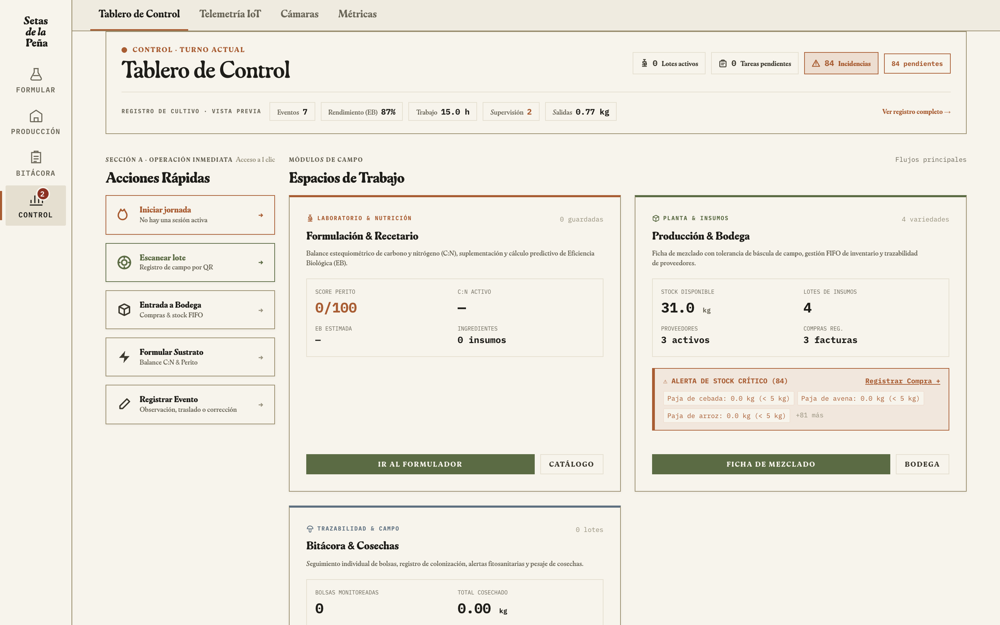
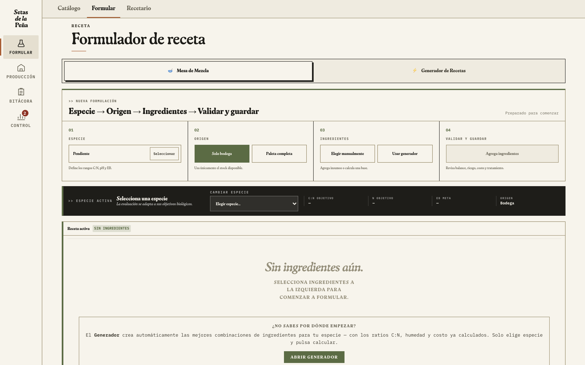
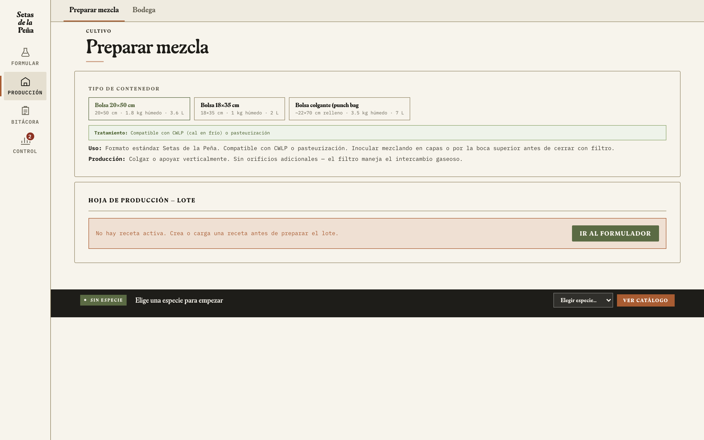
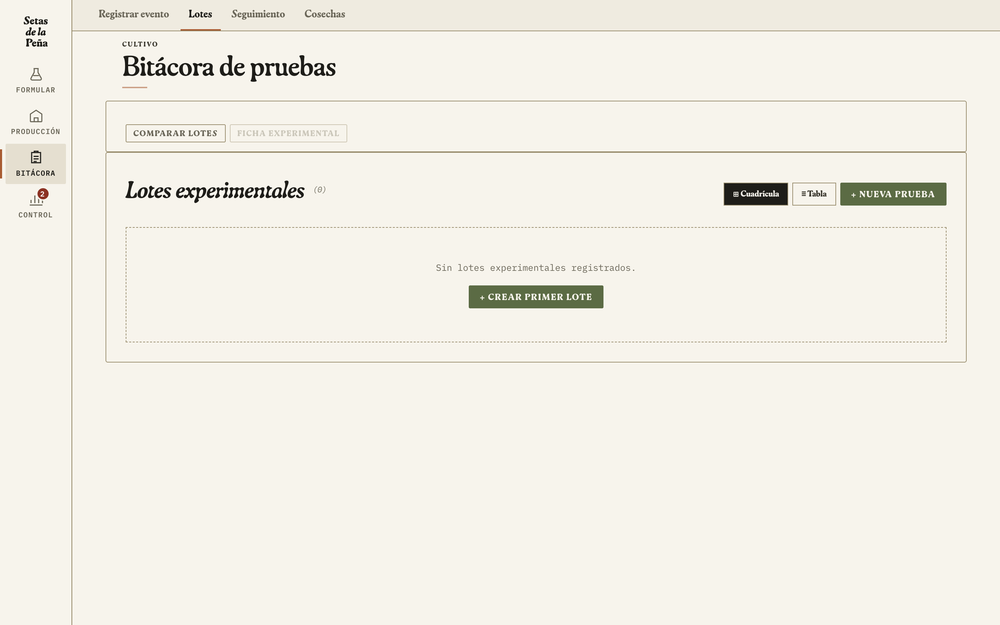

Setas OS — Guía Operativa de Precisión
Manual canónico de uso, arquitectura de datos y protocolos de campo para la plataforma operativa de cultivo de hongos comestibles y medicinales en Tenjo, Colombia.
1. Introducción y Filosofía del Sistema
Setas OS es la plataforma tecnológica central de Setas de la Peña. Nace para sustituir planillas desconectadas y cálculos dispersos por un entorno unificado, robusto y diseñado para operar directamente en el entorno de cultivo y laboratorio.
Setas OS modela la operación exactamente como la finca la vive. Los objetos operativos reales (lotes, cuartos, recetas, materias primas e incidentes) dictan las acciones. El flujo canónico es: Objeto → Estado → Siguiente Acción Válida.
El sistema opera bajo arquitectura Offline-First (sin requerir conexión a internet obligatoria en campo), persistiendo datos en almacenamiento local y sincronizando con Firebase Firestore y el servidor MCP Bridge (setas_bridge_mcp.py) para coordinación de agentes de IA y consolidación multi-dispositivo.
Setpoints operacionales, límites físicos de sensores, objetivos de literatura científica y distribuciones históricas medidas son clases de datos distintas. Nunca deben intercambiarse silenciosamente.
2. Los Cuatro Espacios de Trabajo
La interfaz se organiza en cuatro espacios de trabajo principales accesibles desde el riel de navegación, más herramientas especializadas:
Barra sticky con Receta Activa, catálogo de especies, balance estequiométrico C:N, cálculo de humedad y motor Perito IA.
Planificador semanal de siembras, preparación de lotes de sustrato, bodega de insumos con deducción FIFO y emisión de etiquetas térmicas aisladas.
Cuaderno de campo inmutable, escaneo QR de lotes, registro de inspecciones, seguimiento de bolsas y pesaje de cosechas (EB%).
Tablero maestro, RoomCycles, Banco Climático con sensores de precisión (SCD30 con compensación de altitud a 2.600 m s. n. m., SHT31/45 y DS18B20).

3. Formulación & Simulación de Sustratos
La versión actual consolida la Receta Activa en la barra superior persistente (*sticky bar*), permitiendo edición directa de ingredientes en la bandeja y eliminando duplicidades en paneles inferiores.

Matriz de Parámetros Fisiológicos por Especie
| Especie Científica | Nombre Común | C:N Óptimo | T° Incubación | T° Fructificación | HR Óptima | Método Térmico |
|---|---|---|---|---|---|---|
| Pleurotus ostreatus | Orellana Gris | 25:1 – 50:1 (35:1) | 22–25 °C | 15–20 °C | 85–90 % | Pasteurización / Vapor |
| Pleurotus ostreatus var. florida | Orellana Blanca | 25:1 – 45:1 (32:1) | 23–26 °C | 18–24 °C | 85–92 % | Pasteurización / Vapor |
| Pleurotus djamor | Orellana Rosa (Prioritaria) | 25:1 – 40:1 (30:1) | 26–28 °C | 22–28 °C | 85–90 % | Pasteurización / Vapor |
| Pleurotus eryngii | Seta de Cardo | 20:1 – 28:1 (24:1) | 21–24 °C | 13–16 °C | 88–92 % | Esterilización (15 PSI) |
| Lentinula edodes | Shiitake | 35:1 – 70:1 (50:1) | 22–24 °C | 12–18 °C | 80–85 % | Esterilización (15 PSI) |
| Hericium erinaceus | Melena de León | 30:1 – 45:1 (35:1) | 21–24 °C | 16–20 °C | 85–92 % | Esterilización (15 PSI) |
| Ganoderma lucidum | Reishi / Lingzhi | 45:1 – 80:1 (60:1) | 24–28 °C | 25–30 °C | 80–90 % | Esterilización (15 PSI) |
| Flammulina velutipes | Enoki | 25:1 – 40:1 (27:1) | 20–22 °C | 8–12 °C | 85–90 % | Esterilización (15 PSI) |
| Pholiota nameko | Nameko | 30:1 – 50:1 (38:1) | 21–24 °C | 10–15 °C | 90–95 % | Esterilización (15 PSI) |
Estructura de Tres Capas y Balance Hídrico
Humedad Total (%) = [ (Agua Añadida en kg + ∑(Masa_i × H_i)) / Masa Total Húmeda en kg ] × 100
4. Bodega e Inventario FIFO
El inventario gestiona insumos y materias primas mediante rotación estricta First-In, First-Out para garantizar que los lotes más antiguos de salvado o granos no pierdan calidad ni acumulen humedad.
Al ingresar un cargamento (paja, afrecho, cal), se registra lote de proveedor, fecha de entrada, costo por kg y stock inicial.
Stock DisponibleAl presionar "Preparar Lote" en el formulador, Setas OS resta del inventario las materias primas consumidas sin requerir doble ingreso.
Alerta Reorden < 20 kg5. Preparación de Lotes & Identificación FOS
Al ejecutar una mezcla, el sistema genera el código de trazabilidad unívoco y emite la ficha técnica del lote para control visual en sala.
Identificador Canónico de Lote (FOS-01) y Ficha de Campo (FOS-02)
- Cada bloque lleva el código LP-XXXX-AA impreso en etiqueta térmica aislada (50×30mm o 60×40mm).
- En sala se cuelga la Ficha FOS-02 en la cabecera de la estantería correspondiente.
- La captura en campo se realiza escaneando el código QR con cualquier smartphone autorizado.

6. Bitácora, Ciclo de Vida & Cosechas
Máquina de Estados Canónica del Lote
Todo lote transita por 11 estados formales. Las transiciones registran fecha, operario e incidencias:

Registro de Cosechas & Eficiencia Biológica (EB%)
Al cosechar cada oleada (Flush 1, Flush 2, Flush 3), se pesa en limpio y se ingresa en Setas OS para comparar el rendimiento real frente al estimado en el formulador.
EB (%) = [ Peso Fresco Total Cosechado (kg) / Peso de Sustrato Seco Inicial (kg) ] × 100
Ejemplo Real: Bloque de 2.0 kg húmedo (0.70 kg seco). Flush 1 = 780 g; Flush 2 = 270 g. Total = 1.05 kg.
EB = (1.05 / 0.70) × 100 = 150.0 %
7. Control Ambiental & Telemetría V1
El espacio Control integra el Banco Climático y supervisa en tiempo real las salas e incubadoras con hardware operativo en Tenjo (Agosto 2026).
| Recinto / Activo | Uso Principal | Hardware & Sensores | Temperatura Setpoint | Humedad Relativa (HR) | CO2 Límite |
|---|---|---|---|---|---|
| CLOUDLAB 844 (Carpa 4×4 ft) | Fructificación Principal | CloudForge T7 (15L), Cloudline H4, SHT31, SCD30 | 18.0 – 24.0 °C | 85 – 90 % | < 1.000 ppm |
| Martha Tent 65" | I+D & Cuarentena | VIVOSUN H05 (control ON/OFF), Noctua NF-P12, SHT45 | 20.0 – 24.0 °C | 85 – 92 % | < 1.200 ppm |
| Incubadora 100 L | Incubación Térmica | Malla QuietWarmth (90W), Calefactor PTC 24V, DS18B20 | 22.0 – 25.0 °C | 60 – 70 % | > 3.000 ppm |
Toda lectura se normaliza como temperature_c, rh_pct, co2_ppm y substrate_temperature_c. El SCD30 opera con compensación obligatoria altitude_compensation: 2600. Lecturas físicamente anómalas se envían a cuarentena automática.
8. Production Learning Loop & Promoción de Ensayos
Setas OS no trata los datos como registros muertos; alimenta un bucle de calibración continuo:
Puerta de Promoción de Ensayos (experiment-model.js)
Permite probar ingredientes candidatos o aditivos. Queda etiquetado como observación y nunca genera afirmaciones agronómicas automáticas.
Exige aleatorización, grupo control, tratamientos y trazabilidad completa de lotes antes de postularse como candidato a SOP aprobado.
9. Rutina Operativa Paso a Paso (Ciclo de 60 Días)
Flujo de trabajo para un ciclo estándar de cultivo de Pleurotus ostreatus en Tenjo:
| Día / Fase | Operación en Granja | Acción en Setas OS | Estado del Lote |
|---|---|---|---|
| Día -1 | Revisar bodega: paja de trigo, salvado, yeso y bolsas de inóculo. | Validar receta en Formular. Crear orden en Planificar. | planned |
| Día 0 | Picar, hidratar al 65%, pasteurizar por inmersión/vapor, enfriar a 24°C e inocular al 8%. | Registrar pesaje en Producción. Emitir lote LP-0418-26. | inoculated |
| Día 1–18 | Incubar en oscuridad en Incubadora 100L a 23°C. Revisar semanalmente avance micelial. | Registrar inspecciones táctiles en Bitácora con foto. | incubation |
| Día 19–21 | Trasladar a CLOUDLAB 844. Choque térmico a 18°C, luz 12h y nebulización continua. | Mover lote a CLOUDLAB 844 y registrar cambio de fase en Bitácora. | induction |
| Día 22–28 | Hacer cortes en bolsas. Desarrollo de primordios a setas adultas. | Anotar fecha de primer primordio visible en Bitácora. | fruiting |
| Día 29–31 | Cosechar racimos de primera oleada (Flush 1) a ras de bolsa. | Pesar en fresco y registrar en Cosechas. Setas OS calcula EB1. | fruiting |
| Día 32–40 | Sumergir bloques en agua limpia fría por 12–24h para rehidratación. | Cambiar estado del lote a reposo en Bitácora. | resting |
| Día 41–48 | Aparición y cosecha de segunda oleada (Flush 2). | Registrar pesaje de Flush 2 y calcular EB acumulada. | fruiting |
| Día 50 | Retirar sustrato gastado a compostera y desinfectar sala con ácido peracético. | Cerrar lote en Setas OS; transferir métricas al historial. | closed |
10. Matriz de Diagnóstico y Troubleshooting
| Síntoma en Granja | Causa Biológica / Operativa | Acción Correctiva Inmediata | Registro en Setas OS |
|---|---|---|---|
| EB Real << EB Proyectada | Baja dosificación de inóculo (<5%), sustrato seco o exceso de lignina. | Elevar spawn al 10% en próxima mezcla; verificar hidratación en prueba de puño. | Calibrar receta en Formular; documentar desvío en Bitácora. |
| Aborto de Primordios (Pebbles amarillos) | Caída de humedad <80% o ráfagas directas de ventilador sin nebulización. | Ajustar timer de humidificadores ultrasónicos; reorientar toberas de ventilación. | Registrar incidencia ambiental en Bitácora; ajustar alarma en Control. |
| Estípites Largos / Sombreros Enanos | Nivel excesivo de CO2 (>1.100 ppm) por baja renovación de aire. | Aumentar ciclos de extracción forzada y entrada de aire filtrado exterior. | Comprobar lecturas de sensores en Control → Tablero. |
| Parches Verde Oscuro (Trichoderma) | Pasteurización deficiente, siembra sobre sustrato caliente (>28°C) o esporas en aire. | Aislar y embolsar bloque de inmediato; retirar de la granja y fumigar con peracético. | Marcar bloque en estado discarded con motivo patógeno. |
| Micelio Velloso / Estroma Denso | Exceso de nitrógeno en sustrato o temperaturas de colonización muy elevadas. | Reducir porcentaje de salvado en receta; aumentar ventilación en sala de incubación. | Revisar relación C:N en Formular (mantener en rango 35:1). |
| Pérdida de Conexión / Sin Internet | Corte de señal o trabajo en zona ciega de la finca. | Ninguna: Setas OS opera 100% offline en localStorage sin interrupción. | Al reconectar, verificar indicador de sincronización en encabezado. |
11. Persistencia, Seguridad & Herramientas MCP
Setas OS combina autonomía de campo y centralización en la nube:
Todo registro se guarda instantáneamente en el dispositivo del operario. La memoria local retiene recetarios, lotes activos y eventos sin depender de conectividad.
El servidor setas_bridge_mcp.py lee en tiempo real el árbol de archivos y coordina la adición estructurada de notas y logs de producción sin riesgo de sobrescrituras.